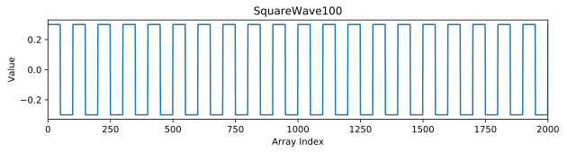
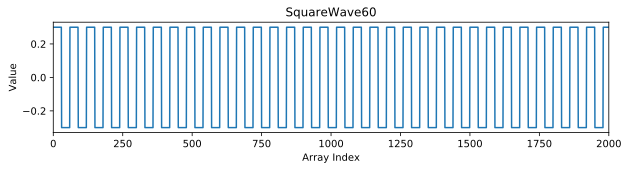
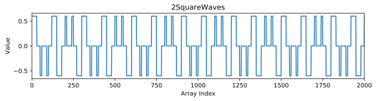
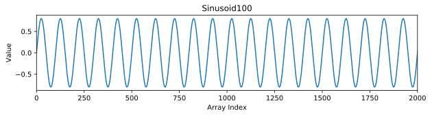
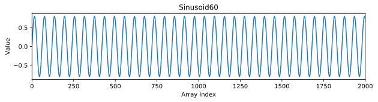
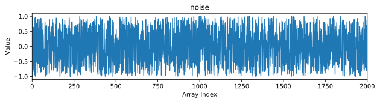
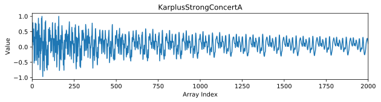

Assignment 5: Guitar String Synthesis (25 pts)
Chris Tralie
Due Friday 3/6/2020
Overview / Logistics
The purpose of this assignment is to get you practice with arrays and loops in a fun application that involves digital audio.
Click here to download the skeleton code for this assignment. You will be editing src/guitarstring/GuitarString.java.
We will be using the StdAudio library from the Princeton algs4cs repository. Click here to view the documentation for this library.
What to submit: When you are finished, you should submit GuitarString.java to Canvas. Please also submit answers to the following questions: (you can simply number your answers from 1 to 6 as a comment on Canvas)
- Did you work with a buddy on this assignment? If so, who?
- Did you use any resources outside of the class textbook and provided links to help you complete the assignment? Please list them here.
- Are you using up any grace points to buy lateness days? If so, how many?
- Approximately how many hours it took you to finish this assignment (I will not judge you for this at all...I am simply using it to gauge if the assignments are too easy or hard)
- Your overall impression of the assignment. Did you love it, hate it, or were you neutral? One word answers are fine, but if you have any suggestions for the future let me know.
- Any other concerns that you have. For instance, if you have a bug that you were unable to solve but you made progress, write that here. The more you articulate the problem the more partial credit you will receive (fine to leave this blank)
Background: Digital Audio / Musical Notes
Sound is the result of pressure waves traveling through the air. Just as our ears pick up these pressure variations and send a signal to our brain, digital microphones/ADCs are designed to turn these variations into an array of pressure samples over time (in the discussion below, we often refer to "sample" and "array index" interchangeably). Digital audio is often sampled at 44100 samples per second, which we refer to as the sample rate (FS). This means that if we want to represent 2 seconds of audio, for instance, we need an array with 88200 samples (good thing we're using arrays and don't have to define 88200 individual variables!). The reason for this is that we need a sampling frequency that's at least twice the highest frequency we want to represent. Since the highest frequency humans can hear is around 20,000hz, 44100hz is adequate. (Another fun fact about this number is it is 22 32 52 72)
Square Waves And Pitches
One property of our perception of audio is that if a sound repeats a pattern over and over again quickly enough, we hear it as a pitch, or musical note. For example, let's consider a "square wave." The code below is a snippet from SquareWave.java in the homework 5 package which generates this pattern. The pattern will repeat itself every T elements in the array. This is referred to as the period of the audio.
For example, let's consider the audio we get from the following call to the method, where the period is 100 and the audio goes on for one second The first 2000 samples of the array look like this

And the audio sounds like this (a concert A)
If we shorten the period to 60 then the first 2000 samples look like this

Notice how there are more repetitions packed together over the same same number of samples. This makes the audio goes up in pitch to a higher note (the F# above concert A)
We can mix these two sounds together into one composite sound by using the sumArrays method we wrote in class (which I've placed in a class called ArrayUtils in the homework 5 code)
Which looks and sounds like this

Pure Tone Sinusoids
It's also possible to build sounds from sine waves, which we refer to as "pure tones." Given a sample rate FS, a period T, and an amplitude (loudness) a, the formula for the value in the array at index i is
\[ a \sin(2 \pi i / T) \]
For those who know trigonometry, you'll notice that this does indeed go through one period overT samples, since that will bring it from 0 to 2 PI. The code to do this, which can be found in Sinusoid.java in the homework 5 code, looks like this:
For example, let's consider the audio we get from the following call to the method, where the period is 100 and the audio goes on for one second The first 2000 samples of the array look like this

And the audio sounds like this (a concert A)
If we shorten the period to 60 then the first 2000 samples look like this

As with the square wave, there are more repetitions packed together over the same same number of samples, which makes the audio go to a higher pitch
Main Programming Task: The Karplus-Strong Algorithm
The square waves and sinusoids sound a bit dull and unrealistic (although a real clarinet does sound a bit like a square wave). But it is possible to make a very realistic plucked guitar sound with a surprisingly simple algorithm known as the Karplus-Strong Algorithm, which is the starting point for all of the digital synthesizers used in the 80s and beyond. Your job in this assignment will be to implement the Karplus-Strong algorithm in several stages by filling in three methods in GuitarString.java
1. Getting The Period (6 Pts)
Most Western string orchestras tune to a "concert A," which goes through 440 periods in one second. If our audio is sampled at 44100 samples per second, this means that each period takes up about 100 samples (which we saw in the examples above). In each octave in the Western chromatic scale, there are 12 notes total. Going from one note to its adjacent note in order is called a halfstep. For example, a B is 2 halfsteps above A. The formula for determining the period for a particular note h halfsteps away from a concert A is
\[ T = \frac{FS}{440 \times 2^{h/12}} \]
For example, at a sample rate of 44100, a B which is 2 halfsteps above concert A has a period of\[ T = \frac{44100}{440 \times 2^{2/12}} \approx 89.29 \]
Notice how the period has gotten shorter, which indeed corresponds to an increase in pitch, as we saw in the square/sinusoid examples.It is also possible for the halfstep to be negative, in which case the formula yields a period longer than 100, for a pitch lower than 440. For example, for a G two halfsteps below concert A, the formula yields
\[ T = \frac{44100}{440 \times 2^{-2/12}} \approx 112.5 \]
Your first task is to implement this equation in the getPeriod method in GuitarString.java. You should round the period you return to the nearest integer.
Tips
-
Be sure you're using the correct types here, and cast if you have to! In particular,
h/12should be a decimal number. -
Use the
Math.powfunction to raise a number to a power. -
Use the
Math.round()function to round to the nearest integer.
2. Random Samples (6 Pts)
The next step of the algorithm consists of coming up with some "random noise," which sounds like static. In the context of the Karplus Strong algorithm, this can be thought of as randomly stimulating the string with a pluck. To do this, you will complete the method:
This method should fill in the first numSamples indices of the array arr with random samples between -1.0 and 1.0. As a corner case, if the user asks for more samples than the capacity of the array, you should fill at most the length of the array.
For example, if you make an array that's one second long (FS samples long) and fill the entire array with noise, the code would look like this:
And the audio would sound like "static":
If you were to plot the first 2000 samples of the array, they would look something like this (though the answer would be slightly different every time since the numbers are random)
Tips
-
You can make use of Java's function
Math.random(), which returns a random number between 0.0 and 1.0.
3. The Final Plucked Sound (13 Pts)
Now it's time to tie everything together to get our wonderful plucked sound. You will be filling in the method
The steps are as follows:-
Given a note, find it's period
Tto the nearest integer by using your method that computes the period. -
Setup an array with enough samples to hold
durationseconds audio. -
Fill in the first
Tsamples with random noise using your noise method. -
Process all of the rest of the samples one by one in order, starting at index
T. Each value should be the average of the two adjacent samplesTindices back multiplied by a factor ofdecay. For example, if you're at index 150 and your period is 100, you should average samples at indices 50 and 51. This simulates a traveling wave over a string of lengthTthat decays and dampens "low frequencies" first, and is referred to as a "digital waveguide."
For example, if your code works properly, then the following call to your method will play a guitar string at a concert A which sounds like this
If we plot the first 2000 values of the array, we can see it starts with totally random noise in the first 100 samples, but then it gradually evens out to a periodic sound that decays over time

By default, the main function in GuitarString.java plays the first 24 halfsteps in sequence, which is two octaves of the chromatic scale. If your code is working properly and you run the main, you should hear the following sound
Extra Credit (+5 Points)
As extra credit, you should fill in the method playFile, which loads in and plays a bunch of notes in sequence from a text file. The text file contains a bunch of lines with comma separated values for halfstep,duration,decay. For example, the file HappyBirthday.txt contains the following sequence of 25 notes
Then, when you run
from the main method, you should hear this audio
As a second example, I have also provided the file WannaBeStartinSomething.txt (by Michael Jackson), so that when you run
from the main method, you should hear this audio
Tips
-
If you have a String
sof comma-separated values, thens.split(",")will return an array of Strings that are on either side of the commas. For instance,"11,12,13".split(",")will return the array{"11", "12", "13"}. You will then need to convert each to the correct type. The functionInteger.parseInt(string)will convert a string to an integer, and the functionDouble.parseDouble(string)will convert a string to a double.